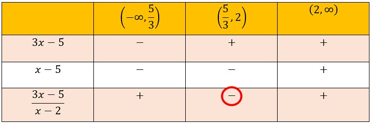
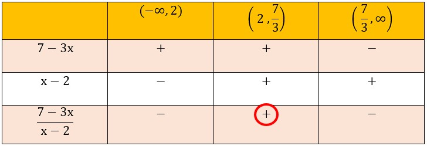
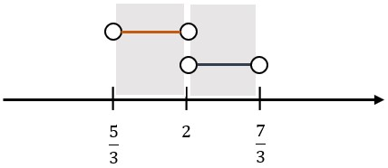

| 1. Apply Formula \(| x | > a ↔ x < -a\) or \(x > a\) |
\(\frac{1}{x - 2} < -3\)
or
\(\frac{1}{x - 2} > 3\) |
| 2. Zerorise RHS and simplify the inequality |
\( \frac{1}{x - 2} + 3 < 0\)
or
\( \frac{1}{x - 2} - 3 > 0\) |
| 3. Factorise completely |
\( \frac{3x - 5}{x - 2} < 0\)
or
\( \frac{7 - 3x}{x - 2} > 0\) |
| 4. Find all critical values |
\( x = \frac{5}{3} ; x = 2\)
or
\( x = \frac{7}{3} ; x = 2\) |
| 5. Table of Sign |

or
 |
| 6. Write down the solution |
\( (\frac{5}{3} , 2)\) or \((2 , \frac{7}{3})\) |
| 7. Use number lines to merge the answers |
 |
| 8. Write down the final solution |
\( (\frac{5}{3} , 2)\) U \((2 , \frac{7}{3})\) |